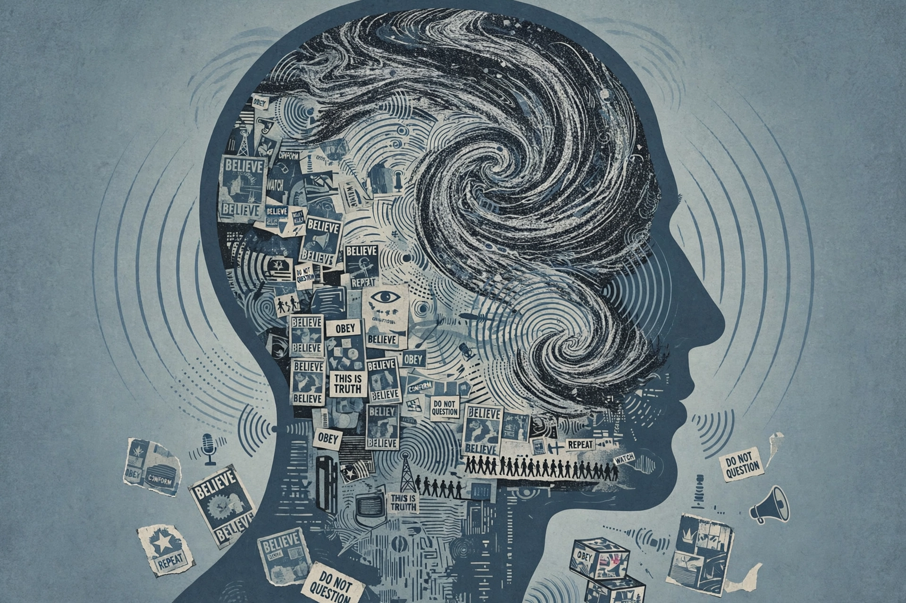

Brainwashing is the concept that the human mind can be altered or controlled by certain psychological techniques. It is supposed to reduce the subject's ability to think critically or independently, to allow the introduction of new, unwanted thoughts and ideas, and to change attitudes, values, and beliefs.

The term originated in the 1950s in English, from journalist Edward Hunter's translation of the Chinese xinao ("wash brain"), applied to Chinese Communist re-education and Korean War prisoners of war. Later it was associated with cults, new religious movements, and coercive persuasion.
Psychologists including Robert Jay Lifton and Margaret Singer studied thought reform. Lifton identified eight criteria including milieu control, mystical manipulation, demand for purity, and loaded language. Most scholars regard extreme brainwashing claims as pseudoscientific or overstated; influence is real but contested.
The idea features in The Manchurian Candidate and Cold War propaganda. See Propaganda, Mind control, Coercive control.
Brainwashing defences have rarely succeeded in courts. Deprogramming controversies in the 1970s raised civil-liberties concerns.